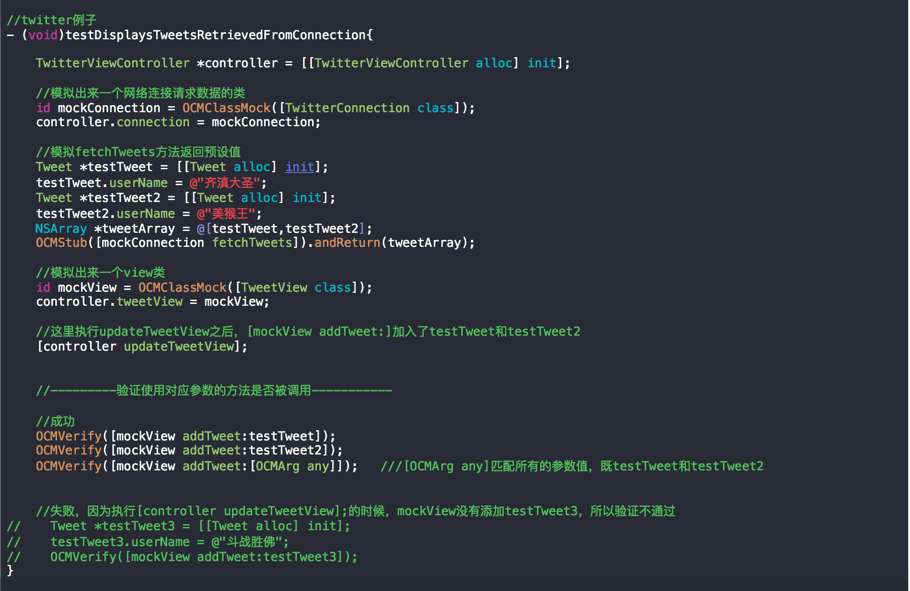

Mock介绍
对于一些不容易构造或不容易获取的对象，此时你可以创建一个虚拟的对象（mock object）来完成测试。
OCMock介绍
官方网站
根据要mock的对象的class来创建一个对应的对象，并且设置好该对象的属性和调用预定方法后的动作（例如返回一个值，调用代码块，发送消息等等），然后将其记录到一个数组中，接下来开发者主动调用该方法，最后做一个verify（验证），从而判断该方法是否被调用，或者调用过程中是否抛出异常等。
1.OCMock中简单使用
class mock一个对象
id mockClass = OCMClassMock([SomeClass class]); //创建mock object当做类的实例Stubbing methods that return objects
/** 意的就是有参数的方法，参数是可以具体指定的，也就是说只有满足你指定的具体参数的调用才会被mock指定的返回值。例子中的[OCMArg any]是指任意参数。
*/
//没有参数的方法
OCMStub([mockClass someMethod]).andReturn(anObject);
//有参数的方法
OCMStub([mockClass someMethod:[OCMArg any]]).andReturn(anObject);注意:
OCMock会在mock实例上没有找到相同名字的实例方法的时候去找同名的类方法。Verify-after-running
有些时候需要验证我们执行的代码流程是否调用了某个外部的方法，这个时候用OCMock就比较简单来实现。如果没有调用过这个方法的话，会立即抛一个异常出来。id mockClass = OCMClassMock([SomeClass class]); //...
//some code
//...
OCMVerify([mockClass someMethod]);验证mock方法没有被调用
验证代码没有调用某个方法
如果方法被调用了，就将isCalled设置为YES，这样最后assert的时候就会报错。static BOOL isCalled = false; id mockClass = OCMClassMock([SomeClass class]);
OCMStub([mockClass someMethod]).andDo(^(NSInvocation *invocation){
isCalled = YES;
});
//...
//some code
//...
XCTAssertFalse(isCalled);验证mock方法传入的参数
验证传递给外部调用的参数是否符合预期id mockClass = OCMClassMock([SomeClass class]); OCMStub([mockClass someMethod:[OCMArg checkWithBlock:^BOOL(id obj) {
//...
//some code
//...
return YES;
]]);mock单例
如果我们mock的类是个单例的话，那么使用之前的方法进行mock是不会生效的。不过OCMock提供了一个很简单的解决方法，那就是调用单例返回mock
id mockClass = OCMClassMock([SomeClass class]); OCMStub([mockClass instanceMethod]).andReturn(mockClass);The any constraint
OCMStub([mock someMethodWithAnArgument:[OCMArg any]]) OCMStub([mock someMethodWithPointerArgument:[OCMArg anyPointer]])
OCMStub([mock someMethodWithSelectorArgument:[OCMArg anySelector]])处理block参数
OCMock也可以处理block回调参数。block回调通常用于网络代码，数据库代码，或者在任何异步操作中。在这个例子中，思考下下面的方法：
- (void)downloadWeatherDataForZip:(NSString *)zip callback:(void (^)(NSDictionary *response))callback;
在这个例子中，我们有一个下载天气压缩数据的方法，并且把下载下来的dictionary代理到一个block的回调中。在测试中，我们通过预定义的天气数据来测试回调处理。这也是明智的测试失败场景。你永远不会知道网络上会返回你什么东西！
OCMStub([groupModelMock downloadWeatherDataForZip:@"80304" callback:[OCMArg any]]]).andDo(^(NSInvocation *invocation){
//2. declare a block with same signature
void (^weatherStubResponse)(NSDictionary *dict);
//3. link argument 3 with with our block callback
[invoke getArgument:&weatherStubResponse atIndex:3];
//4. invoke block with pre-defined input
NSDictionary *testResponse = @{@"high": 43 , @"low": 12};
weatherStubResponse(groupMemberMock);
});
/**
1.这个mock对象使用带NSInvocation参数的“andDo”方法。一个NSInvocation对象代表一
个‘objectivetified’（实在不知道这个什么鬼）表现的方法调用。通过这个NSinvocation对
象，使得拦截传递给我们的方法的block参数变得可能。
2.用与我们测试的方法中相同的方法签名声明一个block参数。
3.NSInvocation实例方法"getArgument:atIndex:"将赋值后的块函数传递都原始函数中定义
的块函数中。注意：在Objective-C中，传递给任意方法的前两个参数都是“self”和“_cmd”.这是
一个运行时的小功能以及用下标来获取NSInvocation参数时我们需要考虑的东西。
4.最后，传递这个回调的预定义字典。
*/
2.OCMock简单示例

示例2：
- (void)testStrictMock3{
id classMock = OCMClassMock([TweetView class]);
//设置期望或预设，这个classMock需要执行addTweet方法且参数不为nil。 不然的话会抛出异常
//OCMExpect([classMock addTweet:[OCMArg isNotNil]]);
//OCMStub([classMock addTweet:[OCMArg isNotNil]]);
/* 如果不执行以下代码的话会抛出异常 */
Tweet *testTweet = [[Tweet alloc] init];
testTweet.userName = @"齐滇大圣";
[classMock addTweet:testTweet];
OCMVerifyAll(classMock);
}
这表示一种友好的mock，不会在没有OCMExpect或OCMStub设置类的所有方法时抛出异常。以上代码把OCMExpect和OCMStub注释掉时不会报错。
还有一种表示严格的mock：OCMStrictClassMock，如果把OCMExpect和OCMStub注释掉时会报错，它要求你执行类中的所有方法，所以比较适合用来测试必须实现的方法，代码如下：
- (void)testStrictMock3{
id classMock = OCMStrictClassMock([TweetView class]);
//OCMExpect([classMock addTweet:[OCMArg isNotNil]]);
//OCMStub([classMock addTweet:[OCMArg isNotNil]]);
Tweet *testTweet = [[Tweet alloc] init];
testTweet.userName = @"齐滇大圣";
[classMock addTweet:testTweet];
OCMVerifyAll(classMock);
}